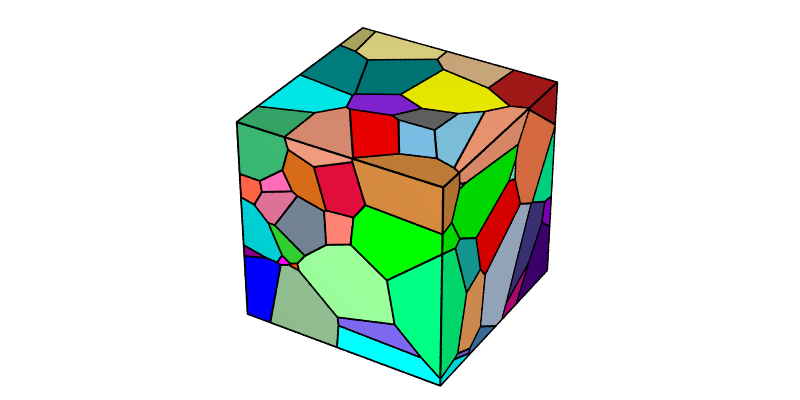
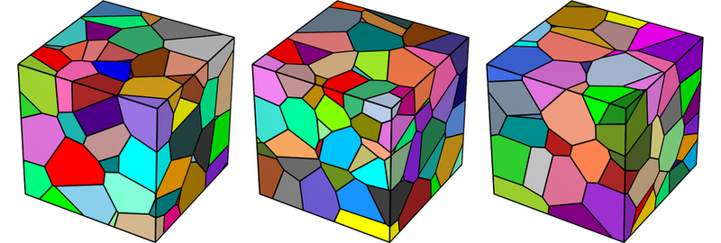
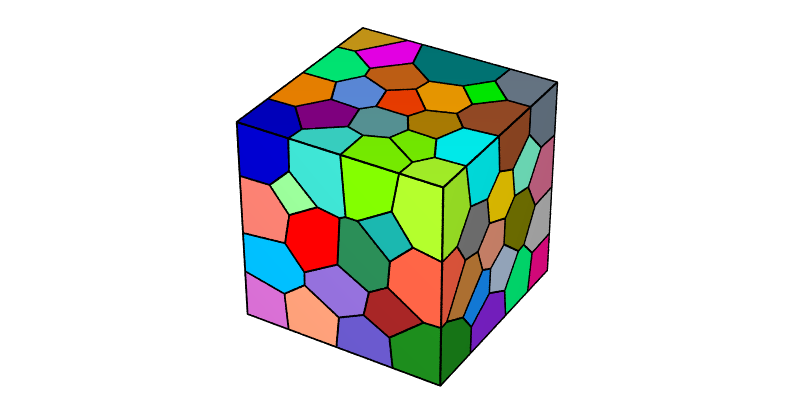

Generating a Voronoi Tessellation
Note
This tutorial presents the -n, -id, -dim and -domain options of the Tessellation Module (-T). For details on the use of the Visualization Module (-V) in this tutorial, see Visualizing a Tessellation.
To reproduce exactly the images below, add the following line to your $HOME/.neperrc file (or to a local configuration file to be loaded with --rcfile):
neper -V -imagesize 800:400
Tessellations are generated using the Tessellation Module (-T). Voronoi tessellations are generated by default [CMAME2011], and the only required input is the number of cells.
Specifying the Number of Cells (-n)
The number of cells can be specified using -n. A Voronoi tessellation containing 100 cells can be generated as follows:
$ neper -T -n 100
This produces a Tessellation File (.tess) named n100-id1.tess.
The tessellation can be visualized using the Visualization Module (-V):
$ neper -V n100-id1.tess -print img1
This produces a PNG file named img1.png where cells are colored by their ids (1, 2, etc.) according to the Color Map for Integer Values.

Generating Different Tessellations (-id)
Given a number of cells, different tessellations can be obtained using -id (the default value is 1). The specified value initializes the random number generator, which is then used to determine the seed coordinates. This can be done as follows:
$ neper -T -n 100 -id 2
This produces a Tessellation File (.tess) named n100-id2.tess.
The new tessellation can be visualized as before:
$ neper -V n100-id2.tess -print img1b

Those who prefer non-deterministic tessellation generation can use -id -1, which selects a new random seed on each run. For example, to generate three different tessellations:
$ neper -T -n 100 -id -1 -o tess1
$ neper -T -n 100 -id -1 -o tess2
$ neper -T -n 100 -id -1 -o tess3
The new tessellations can be visualized as before, using ImageMagick’s convert to assemble the images:
$ neper -V tess1.tess -print img1c
$ neper -V tess2.tess -print img1d
$ neper -V tess3.tess -print img1e
$ convert img1c.png img1d.png img1e.png -trim +repage -resize x300 -extent x300 -bordercolor white -border 10x0 +append -resize 780x -background white -gravity center -extent 800x img1f.png

Note that, because the generation is non-deterministic, you (or anyone else) won’t be able to exactly reproduce these images.
Defining the Domain (-domain)
The domain can be defined using -domain (the default value is "cube(1,1,1)" in 3D and "square(1,1)" in 2D). For example, a cylindrical domain of height 1.5 and diameter 1 can be obtained as follows:
$ neper -T -n 100 -domain "cylinder(1.5,1)"
This produces a Tessellation File (.tess) named n100-id1.tess.
The tessellation can be visualized as follows, with semi-transparent edges emphasizing the faceted representation of the domain:
$ neper -V n100-id1.tess -dataedgetrs "((cyl!=1)?0:0.6)" -print img2

Note
Complex domains can be generated using -domain together with -transform cut.
Switching to 2D (-dim)
The tessellation dimension can be specified using -dim (the default value is 3). A 2D tessellation can be generated as follows:
$ neper -T -n 100 -dim 2
This produces a Tessellation File (.tess) named n100-id1.tess.
The tessellation can be visualized as before:
$ neper -V n100-id1.tess -print img3